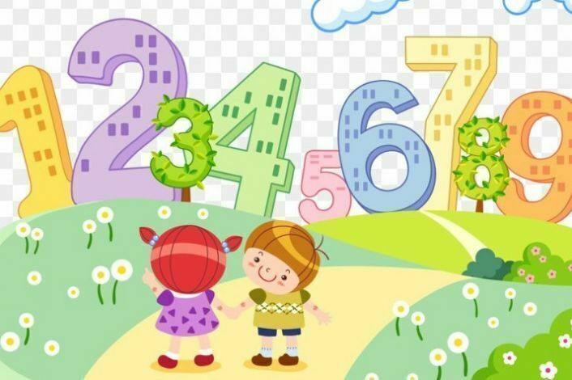

Выбери тест, который хочешь пройти
Согласно закону квадрата — куба, при пропорциональном увеличении объекта его объём возрастает пропорционально кубу масштабирующего коэффициента, а площадь поверхности — пропорционально квадрату этого коэффициента. Применительно к живым существам отсюда вытекает принципиальное отличие в скелете и мускулатуре сильно отличающихся размерами животных. Если произвольное животное увеличить, к примеру, в 10 раз, его вес возрастёт сразу в 1000 раз, а вот поперечное сечение костей и мышц — лишь в 100 раз, поэтому скелет попросту не выдержит нагрузку, к тому же не сможет функционировать дыхательная система.
В языке индейского народа пирахан из бразильских джунглей нет числительных. Они могут лишь сказать «немножко», «побольше» и «много», то есть не способны средствами языка чётко отличить даже один предмет от пары. Исследователь Дэниел Эверетт несколько месяцев пытался научить их считать до десяти или складывать хотя бы 1+1, но не смог этого сделать. Не существует у пирахан и названий цветов, а только описательные фразы, например, «как кровь» для красного.
Перейдя в 1998 году в «Интер», Роберто Баджо попросил себе любимый 10 номер. Роналдо уступил его, но потребовал майку с 9 номером, под которым выступал чилиец Иван Саморано. Тот взял номер 18, однако между единицей и восьмёркой на его форме красовался плюсик.
Используемая нами десятичная система счисления возникла по причине того, что у человека на руках 10 пальцев. Способность к абстрактному счёту появилась у людей не сразу, а использовать для счёта именно пальцы оказалось удобнее всего. В основе распространённых в древних Шумере и Вавилоне двенадцатеричной и шестидесятиричной систем тоже было использование рук: большим пальцем отсчитывались фаланги других пальцев ладони, число которых равно 12.
Отдельные высокосоциальные виды муравьёв способны объяснять друг другу путь к пище, умеют считать и выполнять простейшие арифметические действия. Например, когда муравей-разведчик находит еду в специально сконструированном лабиринте, он возвращается и движениями антенн и ног объясняет, как пройти к ней, другим муравьям.
Английский математик Абрахам де Муавр в престарелом возрасте однажды обнаружил, что продолжительность его сна растёт на 15 минут в день. Составив арифметическую прогрессию, он определил дату, когда она достигла бы 24 часов — 27 ноября 1754 года. В этот день он и умер.
Самым важным своим достижением Архимед считал не названный его именем закон гидростатики и не устройства, которые помогли победить осадивших Сиракузы римлян. Больше всего он гордился открытием того, что объёмы шара и описанного вокруг него цилиндра соотносятся как 2:3. Архимед даже завещал поместить на его могиле скульптуру из вписанного в цилиндр шара, которую упомянул посетивший Сиракузы два века
Стандартный кубик Рубика можно собрать из любой позиции не более чем за 20 ходов. Математическое обоснование этого получило название алгоритм Бога, а максимальное количество ходов в таком алгоритме — число Бога. Аналогичные числа можно высчитать и для других перестановочных головоломок: например, пятнашки могут быть решены за 80 ходов
В начале 1980-х годов сеть ресторанов быстрого питания A&W запустила масштабную рекламную кампанию своего гамбургера. В отличие от похожего сэндвича в 1/4 фунта из McDonald's, гамбургер A&W весил 1/3 фунта и стоил чуть дешевле, а покупатели говорили, что он вкуснее. Несмотря на всё это, кампания провалилась. Позже A&W провела исследование и выявила причину: многие клиенты не понимали истинного значения дробных чисел. Предложение казалось им невыгодным, так как 3 меньше 4.
В феврале 1992 года состоялся розыгрыш лотереи Виргинии «6 из 44», где джек-пот составлял 27 миллионов долларов. Число всех возможных комбинаций в таком виде лотереи было чуть выше 7 миллионов, а каждый билет стоил 1 доллар. Предприимчивые люди из Австралии создали фонд, собрав по 3 тысячи долларов от 2500 человек, купили нужное число бланков и вручную заполнили их различными комбинациями цифр, получив после выплаты налогов тройную прибыль.
Математика — это не только арифметические задачки. Это особый язык, который учит думать и рассуждать.
Математику называют междисциплинарной наукой, потому что она тесно связана с физикой, географией, геологией, химией. Социология и экономика неотделимы от математики, поэтому многие выводы из гуманитарных исследований опираются на математические понятия и логические законы.
Мир изменился и стал более технологичным, поэтому для любителей математики открыто множество вариантов профессионального развития.
Что отличает математику от других школьных предметов:
Зачем заниматься физкультурой? Ответ простой — для здоровья и красоты тела
Зачем учить математику? Ответ на этот вопрос кажется менее очевидным. Математика — это гимнастика для ума. Хочешь не хочешь, но в процессе изучения будут крепчать качества, которые влияют на способ мышления.
Для этого необязательно учиться в профильном классе и участвовать в олимпиадах — решение даже самых простых задачек на пропорции или с процентами дает значительный эффект.
Математика — волшебница, не иначе! Систематизируем все волшебные свойства и повторим, какие навыки можно развить с помощью математики:
Представление о Числе - одно из главных и самых важных в программе по математике начальной школы.
На нем будет основываться все твое дальнейшее обучение. И преподаватели с большим опытом и неопытные родители начинают знакомство дошкольников с числами со счета предметов.
Скорее всего значки 3, 5, 8 тебе ничего не говорят. Мысли красками, формами... Посмотри на рисунки – это поможет тебе быстро и легко запомнить цифры, так же, как запоминаются буквы алфавита по картинкам.
Очень важно для дальнейшего обучения запоминание, заучивание, усвоение таблиц сложения чисел в пределах 10 и соответствующие случаи состава этих чисел.